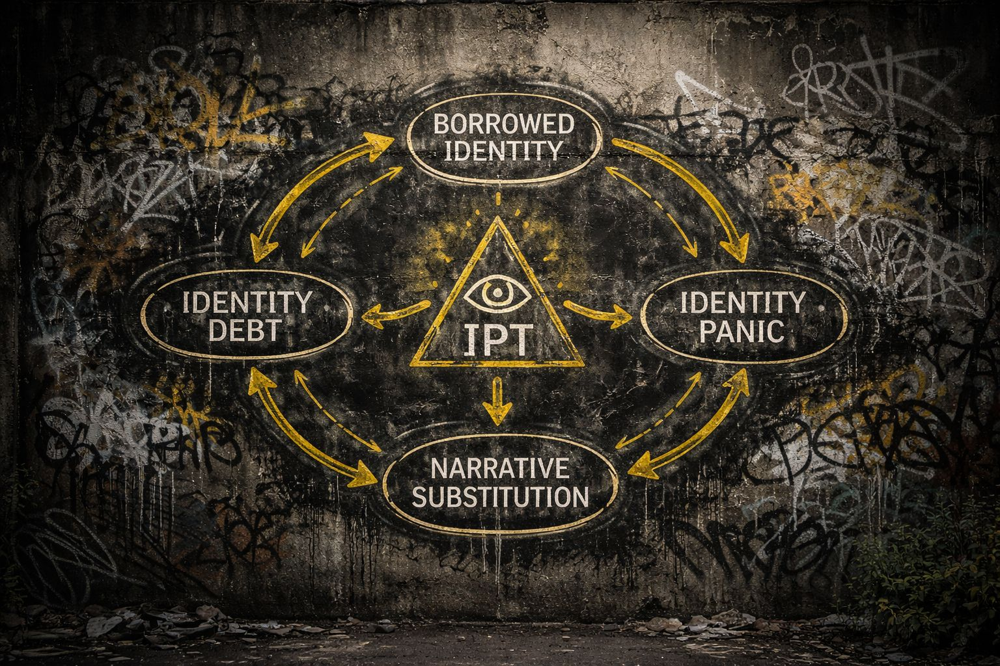

IDENTITY PANIC TOOLKIT [ADDITIONAL DOCUMENT]
This document expands on core IPT principles by identifying three linked mechanisms:
Borrowed Identity
Identity Debt
&
Narrative Substitution
These are not accusations.
They are observation tools.
Use them to examine behavior — in others and in yourself — without hostility.
A borrowed identity is an identity assembled primarily from external sources rather than lived experience.
Sources may include:
Borrowed identity is not inherently harmful.
All humans learn through imitation.
The issue arises when a borrowed identity is mistaken for something fully self-generated.
Not everything that feels like “me” originated from within.
When a borrowed identity is adopted, it often requires ongoing psychological maintenance.
This creates Identity Debt.
Identity Debt is the internal pressure created by sustaining an identity that depends on external validation and reinforcement.
These behaviors are not random.
They are maintenance actions.
If something must be constantly defended, it may not be fully owned.
Identity is not only built from beliefs.
It is built from the stories that explain those beliefs.
Narrative Substitution occurs when a person adopts a pre-constructed story to interpret reality, rather than forming one through direct experience.
Instead of:
I experienced → I concluded → I believe
It becomes:
I heard → I accepted → I repeat
It is not only belief that is inherited — it is the explanation of belief.
These three mechanisms form a loop:
Borrowed Identity
→ creates
Identity Debt
→ maintained by
Narrative Substitution
→ when threatened, produces
Identity Panic
This loop can operate unconsciously.
The goal is not to eliminate identity.
The goal is to recognize how it forms and stabilizes.
When encountering these patterns:
Instead:
This framework applies inward as well.
Ask:
Which parts of my identity were chosen vs inherited?
What do I feel pressure to defend?
Where do my explanations come from?
Observation is sufficient.
Immediate change is not required.
Identity is not fixed.
It is assembled, maintained, and revised over time.
Recognizing the structure does not remove identity.
It restores flexibility.
IDENTITY PANIC TOOLKIT
Public Domain Material
No affiliation required
No agreement necessary
Recognition is sufficient
“Adopt → Defend → Repeat → React
That’s the cycle.”